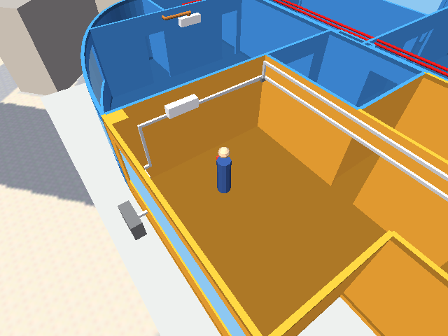
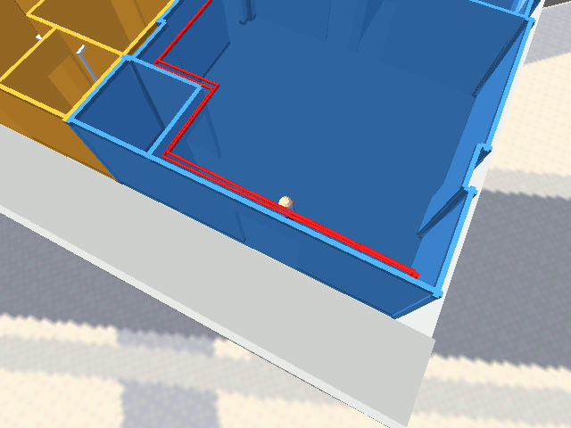
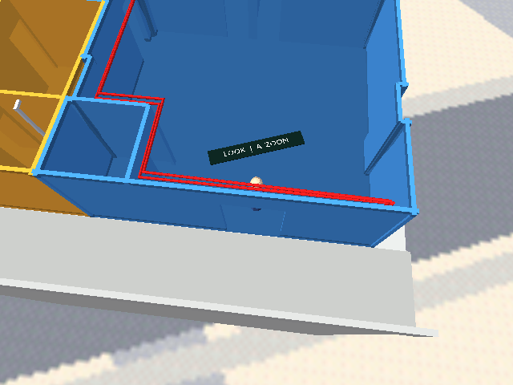

205/639 + 205/640 · Forth camera controls
Implemented in the existing engine
Actual engine captures below. Camera input, orbit, limits, reset and touch-mode behavior are implemented in Forth; no engine changes.
4 + ← → orbit · 4 + ↑ ↓ tilt · 5 / 6 closer / farther · 4 + 1 reset · 3 switch apartment

Inspect the installed aircon in 640. Walk to the installation, adjust the angle, and zoom. Both head connections and the low compressor route are visible.

Orbit around the player. Holding 4 consumes movement while the camera turns. Release 4 to walk; the chosen view persists.

Touch: Look mode. Tap A to cycle Walk → Look → Zoom. A Forth-controlled level-mesh label shows the current mode and next action.
Touch: Zoom mode. Up moves closer; down farther. Tap B for the nearby door, hold B to reset, or press A+B to switch apartments.
Keyboard, gamepad and phone/tablet diagrams
Touch profile tested using injected button input. Physical phone/tablet touch behavior, hardware controller mapping and iPhone/iPad host support remain unverified. The camera uses elevated limits to avoid existing shell collision behavior. This is an inspection orbit, not free flight.